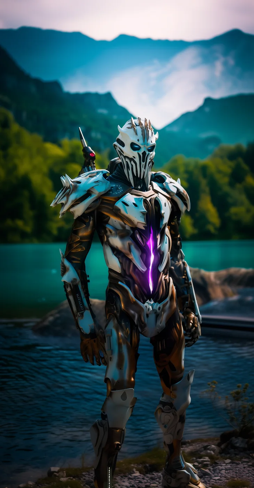

©
©

Griv
Grim Corsair · Elite
Griv hunts relics on Earth 1, and anyone who comes for Griv's relics regrets it. The Degrade Zone waits for the next enemy who dares to use a special against Griv, then rots them from the inside. Griv's pilot claims to have found something on Earth 1 that the Corsairs were never meant to find.